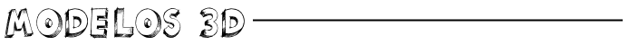
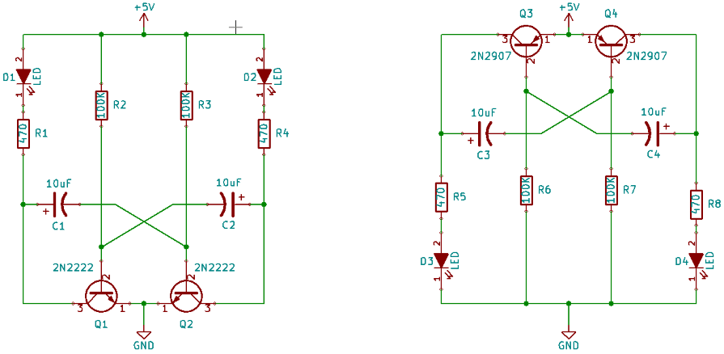

2015-05-05 - Nº 1
Editorial
Cada vez mais a Internet apresenta-nos informação interessante de explorar e que serve de alimento para o nosso cérebro e para as nossas criações. Esta Newsletter criada em 5-5-2015 ainda não tem uma periodicidade definida e é primariamente dirigida aos membros do altLab, tem por objectivo apresentar de forma sintética alguma da informação útil encontrada na Internet.
A Newsletter apresenta uma diversidade entre artigos próprios e artigos publicados por outros internautas e que se destacam pela criatividade, novidade ou apenas curiosidade dos mesmos.
Neste momento a Newsletter tem um artigo relacionado com cada um destes tópicos:
- Novidades da Semana
- Cursos MOOC
- Modelos 3D
- Open Source
- Circuitos
- Artigo do Maker
- Gadget em Destaque
- Compras
- Ferramentas
Com uma filosofia "open *" serão apresentadas ferramentas livremente disponíveis e que podem e devem ser usadas por todos, assim como criações 3D e circuitos que podem ser construídos de forma simples. Nesta Newsletter falamos acerca do Kicad, de multímetros, de um gadget chamado Espruino Pico e muito mais!
 João Alves ([email protected])
João Alves ([email protected])

- Tesla disponibiliza o "powerWall" - sistema de baterias para casa
- Microsoft disponibiliza versão de Windows 10 para Raspberry Pi 2
- Serviço Uber bloqueado em Portugal por ordem de tribunal
- Saiu a revista MagPI 33

- Modelling and Simulation using MATLAB - Começa em 21 Maio
- An Introduction to Interactive Programming in Python (Part 1) - Começa em 22 Maio
- Programming for Everybody (Python) - Começa em Junho
- Begin Programming: Build Your First Mobile Game - Começa em Junho
- An Introduction to Interactive Programming in Python (Part 2) - Começa em Julho

Com a disponibilidade de ferramentas que permitem dar azo a nossa imaginação na criação de peças 3D e espaços como o thingiverse para as publicar, esta rubrica apresenta alguns modelos seleccionados que poderão ser uteis.
Precision handle for mini-drill (http://www.thingiverse.com/thing:801195)
Protections for fingers and softened angles were added to a safer and more pleasant grip.
Cable Clip Remix (http://www.thingiverse.com/thing:70559)
Simple cable clip for handling cables.
Hoje vamos falar do Kicad. Este encontra-se disponível em http ://www.kicad-pcb.org/
O Kicad é um software open source para desenhar PCB - Placas de Circuito integrado.
Trata-se de um software que permite o desenho de placas PCB até 32 camadas. Foi desenvolvido para que possa correr em Linux, Windows e OSX. O software é composto por quatro módulos:
- Eeschema, editor de esquemáticos.
- Pcbnew, editor de PCBs.
- Gerbview, Visualizador de ficheiros Gerber.
- Cvpcb, editor/seleccionador de aspecto dos componentes (footprint).
O processo de criação de placas no Kicad pode ser feito em 3 passos. O KiCad permite que se crie a placa de circuito impresso através de três aplicações principais interligadas e independentes: Eeschema, CVPCB, Pcbnew. Este é feito em três passos:
- PASSO 1, captura esquemática. Com o KiCad editor esquemático Eeschema, é possível criar uma folha eletrónica sofisticada ou um grupo de folhas hierárquicas. Vários componentes esquemáticos vêm com a biblioteca KiCad padrão. A Verificação das regras elétricas (ERC) está disponível.
- PASSO 2, associação de componentes. O Pcbnew permite associar a cada componente esquemático único com o seu aspecto físico. Uma biblioteca muito grande de aspectos vem já com o KiCad.
- PASSO 3, PCB layout. O editor Pcbnew pode lidar com até 16 camadas de cobre mais 12 camadas técnicas (tela de seda, máscara de solda, etc.) e permite que seja feito o layout da placa de circuito impresso final.
Existem diversas versões disponíveis no entanto é recomendada a compilação da versão mais recente.
- Para compilar a ultima versão para Windows: https://launchpad.net/kicad-winbuilder
- Para compilar a ultima versão para Linux: http://www.kicad-pcb.org/display/DEV/Building+KiCad+on+Linux
Em qualquer dos casos o processo de compilação é simples mas demorado e devem ter cerca de 2Gb disponíveis para a geração dos ficheiros.
Aqui é apresentado um circuito simples que poderá ser construído com componentes.
Descrição: 2 Transistor LED Flasher
Construção de dois circuitos que fazem o flash alternado a dois LEDs numa cadência fixa. Este são circuitos muito básicos e que mostram duas formas de construir circuitos recorrendo a Transístores BJT PNP e NPN.
Estes são circuitos clássicos que usam as propriedades dos transístores e dos condensadores para fazer variar a abertura e fecho dos mesmos. Se quiserem fazer variar a frequência da vibração dos LEDs podem trocar as duas resistências de 100K por outros de valores. As resistências de 470 Ohm são para proteção dos LEDs.
Estes circuitos usam o principio do RC Time Constant que vai influenciar o tempo que demorar a descarregar e a carregar novamente o Condensador. Existe aqui nesta página um calculador dos valores que devem ser colocados para obter outros resultados.
Os transístores usados são os mais comuns, podendo no entanto ser usados quaisquer outros, no caso do NPN 2N2222 este pode ser substituído pelo 2N4401 ou pelo 2N3904. No caso do circuito com PNP, podem ser usados além do 2N2907 podem usar-se o 2N3906 ou o 2N4403.

Componentes (BOM):
Para o circuito 1:
- 1 x LED 5mm Vermelho
- 1 x LED 5mm Azul
- 2 x Transístor NPN 2N2222
- 2 x Resistência de 470 Ohms
- 2 x Resistência de 100k Ohms
- 2 x Condensador Electrolítico de 10uF
- 1 x Bateria de 5 a 9 V
Para o Circuito 2:
- 2 x Transístor PNP 2N2907
- Os outros componentes são os mesmos.
Pin-out dos transístores:
Nota: Este circuito foi retirado do site.

Projecto interessante publicado por um maker.
WLAN plotter
Hoje vamos ver uma plotter feita com duas drives de CD antigas e um servo controlados por um Raspberry Pi. Este artigo foi originalmente publicado neste link pelo seu autor.
O sistema é composto por duas drives ópticas velhas, quatro H-Bridges, um servo e um Raspberry Pi.
Das unidades ópticas é necessário os mecanismos para mover o laser. Estes mecanismos usam tipicamente um step motor.
Ambos os mecanismos foram ligados na perpendicular com uma tira de metal perfurado e epoxy.
O suporte de caneta também foi feito com uma tira de metal perfurado colado na cabeça da drive que se encontra em cima. O servo é usado para dobrar a tira de metal assegurando as duas posições da caneta.
Os motores de passo têm quatro pinos: Um par de pinos está ligada internamente a uma bobine electromagnética. Com um multímetro ligado em modo teste de continuidade é possível descobrir quais os pares são ligados a uma bobine.
A placa tem quatro terminais de saída:
Cada par de saídas tem de ser ligado a uma das bobines do motor de passo. Além disso, há quatro pinos de entrada que têm de ser ligados aos GPIOs do Raspberry Pi. Por fim, a tensão de alimentação de 5V tem de ser ligado aos terminais "GND" e "VCC", que é o terminal positivo da tensão de alimentação.
Uma única bobine do motor consome uma corrente de quase 500 mA, que é acima da corrente máxima fornecida pelo pino de 5V do Raspberry Pi. Consequentemente, deve ser usada a fonte de alimentação de um computador ou uma bateria para fornecer a energia elétrica necessária para operar o mecanismo.
O software corre em modo comando. O código fonte pode ser descarregado aqui.
O software pode calcular bitmaps (*.bmp) com uma resolução de 55 x 55 pixels com 24 bits de cor. Qualquer outro tipo de bitmap será ignorado. Os pixéis com componente azul, verde ou vermelho com valor inferior a 200 são tratados como "preto" e serão desenhados. Todos os outros pixels são tratados como "branco" e são ignorados.
O formato de vector suportado é o "Scalable Vector Graphics (*.svg)" com alguns aspectos a considerar:
Nenhuma área é desenhada, apenas os seus contornos. Todos os caminhos (também os contornos de uma área) devem ser definidos como "Polígono". Foi testada a funcionalidade com gráficos editados e exportados como svg pelo Libre Office Draw.
Com o desenho especial da plotter pode ser usada uma caneta resistente a agua para desenhar em praticamente qualquer superfície lisa. A área coberta pela caneta é cerca de 35 vezes 35 milímetros. São necessários 250 passos para mover a caneta em 35 milímetros.
As letras mostradas são claramente superiores à área coberta pela plotter. Depois de desenhar uma das letras, toda a plotter é movida manualmente para a direita.
Outros artigos interessantes de ler:
- Arduino: Under the Hood - Ever wonder how the Arduino IDE translates your code into instructions for the processor?
- WHAT’S AN ARDUINO? JIMMY FALLON KNOWS IT...
- This Tiny Robot Can Pull Weights 2,000 Times Heavier Than It
- SLICK SIX-VOICE SYNTH FOR AVRS
- Converting Servos for Continuous Rotation
Vamos analisar um gadget.
Espruino Pico
Hoje vou falar-vos do Espruino Pico. O Espruino Pico é a evolução do Espruino num formato USB. A campanha Kickstarter terminou e já recebi o gadget. Criado por Gordon Williams este gadget permite fazer programas em JavaScript para controlo de pinos. Este gadget custou £17.
O que é o Espruino Pico ? É uma pequena placa com um microcontrolador que corre um interpretador de JavaScript permitindo de forma fácil o controlo de componentes electrónicos atrav és de pinos de I/O.
Tem tudo o que é necessário pré-instalado. Pode ser usado virtualmente a partir de qualquer equipamento que tenha uma porta USB. No caso do Windows requer instalação de drivers (ver mais a frente)
- Purple boxes show pins that are used for other functionality on the board. You should avoid using these unless you know that the marked device is not used.
- ! boxes contain extra information about the pin. Hover your mouse over them to see it.
- 3.3v boxes mark pins that are not 5v tolerant (they only take inputs from 0 - 3.3v, not 0 - 5v).
- 3.3 is a 3.3v output from the on-board Voltage regulator.
- GND is ground (0v).
- VBAT is the battery voltage output (see the Espruino Board Reference).
- ADC is an Analog to Digital Converter (for reading analog voltages)
- PWM is for Pulse Width Modulation. This creates analog voltages from a digital output by sending a series of pulses.
- SPI is the 3 wire Serial Peripheral Interface.
- USART is a 2 wire peripheral for Serial Data.
- I2C is the 2 wire Inter-Integrated Circuit bus.
PINS NOT ON CONNECTORS
- A9 USB PWM USART1 TX
- A11 USB PWM USART6 TX
- A12 USB USART6 RX
- A13 JTAG
- A14 JTAG
- A15 JTAG PWM
- B0 ADC USB PWM
- B2 LED1 BOOT1
- B12 LED2
- C13 BTN1
- C14 OSC RTC
- C15 OSC RTC
- H0 OSC
- H1 OSC
Funcionalidades:
- Dimensões: 33mm x 15mm (1.3 x 0.6 inch)
- 22 pinos de GPIO: 9inputs Analógicos, 21 PWM, 2 Serial, 3 SPI, 3 I2C
- Todos os GPIO são tolerantes a 5 volts (Arduino compatible)
- Duas linhas de 9 pinos de 0.1", com uma terceira linha de 0.05" com 8 pinos no fim
- Ligação USB Type A na PCB
- Dois LEDs on-board e um botão
- STM32F401CDU6 CPU - ARM Cortex M4, 384kb flash, 96kb RAM
- Regulador de tensão On-board de 3.3v 250mA, aceita voltagens de 3.5v a 16v
- Corrente gasta em modo adormecido: <0.05mA - mais de 2.5 anos com uma bateria de 2500mAh
- FET On-board que pode ser usado para outputs de correntes altas.
Instalação no PC Windows:
- Instalação do driver no windows 8.
- Fazer o download do driver (STM32 Virtual COM Port Driver) da ST em http://www.st.com/web/en/catalog/tools/PF257938#.
- Correr o executável "VCP_V1.4.0_Setup.exe".
- Depois de instalado ir até à pasta:
C:\Program Files (x86)\STMicroelectronics\ Software\Virtual comport driver - Em função da versão de 32 ou 64 bits correr o comando dpinst_x86.exe ou dpinst_amd64.exe
- Neste momento existe uma nova porta Serie (COM).Verificar qual o numero da mesma através do "Device Manager".
- Usar um software de acesso ao terminal (Termite, Putty, etc.) - Parâmetros: 9600 bauds 8n1.
- Pode igualmente ser usado o IDE que foi escrito para o Chrome - Espruino Web IDE
Agora podemos começar a escrever código: escrever reset() `
| |___ ___ ___ _ ||___ ___ | __|_ -| . | | | | | | . | |_____|| || |__||||___| |_| http://espruino.com 1v75 Copyright 2015 G.Williams
setInterval("digitalWrite( LED1,l1=!l1);",200); setInterval("digitalWrite( LED2,l2=!l2);",400); `
Obviamente que muitos mais exemplos podem ser explorados... Mas isso fica para outra altura.
Links Úteis:
- http://www.espruino.com/Quick+Start
- https://www.kickstarter.com/projects/gfw/espruino-pico-javascript-on-a-usb-stick
- http://www.espruino.com/FAQ
- http://www.espruino.com/Pico
- http://www.st.com/web/en/catalog/tools/PF257938#
- http://www.espruino.com/Flashing+Lights
Artigos do ebay ou de outras lojas online que poderão ser úteis em projectos.
MT3608 Step Up Power Apply Booster Module DC-DC 2V-24V 2A
(http://www.ebay.co.uk/itm/181617111546) - US $1.86
- The maximum output current: 2A
- The input voltage: 2V ~ 24V
- The maximum output voltage: > 28V
- Efficiency: > 93%
- product size: 36mm * 17mm * 14mm
300pcs 3mm 5mm LED Light White Yellow Red Green Blue Assorted Kit DIY LEDs
(http://www.ebay.co.uk/itm/151614731803) - £3.99 + £0.49
- 300pcs 3mm & 5mm LED light Assorted Kit DIY:
- 3mm Blue - 40
- 3mm Red - 40
- 3mm White - 40
- 3mm Yellow - 40
- 3mm Green - 40
- 5mm Blue - 20
- 5mm Red - 20
- 5mm White - 20
- 5mm Yellow - 20
- 5mm Green - 20
As Ferramentas que usamos no dia-a-dia explicadas ao detalhe.
O Multímetro
Com múltiplas utilizações, tipicamente estes aparelhos combinam as funcionalidades de um Voltímetro, Amperímetro, Ohmímetro permitindo medir as tensões que passam num circuito, a intensidade de corrente no circuito ou a resistência do circuito. Existem os multímetros analógicos que hoje em dia caíram em desuso pelo aparecimento dos digitais - DMM (os primeiros usavam um galvanómetro para apresentar os valores lidos de forma analógica). No mundo dos multímetros digitais existem os que necessitam de se fixar a escala e os que têm uma escala que se auto-ajusta aos valores que se encontram a ser lidos. O Multímetro é genericamente composto por três partes:
- O Display;
- Um Selector;
- Os Portos.
O Display é responsável por apresentar os valores que se encontram a ser lidos. O Selector permite estabelecer o modo em que o Multímetro está a funcionar. Nos portos são ligadas as sondas para que seja possível tocar nos componentes, circuitos ou fichas onde se pretende fazer a medição.
Trata-se da ferramenta fundamental para qualquer actividade relacionada com circuitos eléctricos ou electrónicos. O custos destes equipamentos varia de uns meros 5 euros até algumas centenas. Isto depende naturalmente da precisão que se pretende obter com as medidas que se estão a tirar assim como com os tipos de valores que se pretendem ler.
Utilizações práticas:
- Medir o valor de resistências. É importante salientar que os valores quando a resistência se encontra montada num circuito poderão ser diferentes da medição isolada da mesma.
- Verificar a condutividade do circuito. Neste modo também é possível verificar LEDs.
- Medir Voltagens. O multímetro tanto mede tensões positivas como negativas (se as pinças forem trocadas o valor lido aparece a negativo)
Medir Correntes. Para que as correntes possam ser medidas o multímetro deverá ser colocado em "serie" com o circuito que se pretende medir a corrente.
Os multímetros tipicamente vêm com um fusível para que quando algo corre mal na medição seja apenas "queimado" o fusível e não toda a electrónica do equipamento. Se deixar de funcionar verificar a bateria e também o fusível.
Questões que podem influenciar a escolha de um multímetro:
- Ter auto-ajuste de escala;
- Ter Backlight;
- Ter auto-off;
- Ter umas sondas decentes.
Para mais informações:
- http://en.wikipedia.org/wiki/Multimeter
- https://learn.sparkfun.com/tutorials/how-to-use-a-multimeter/
That's all Folks!